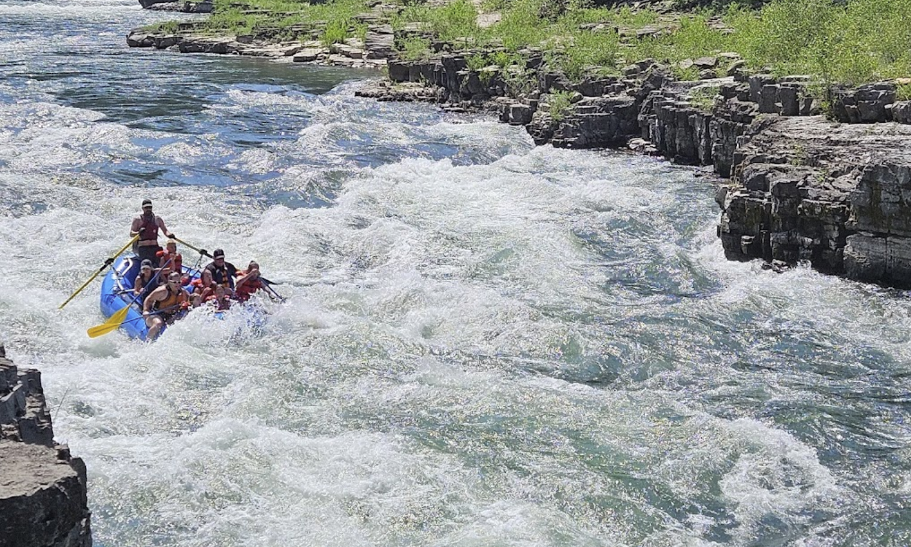
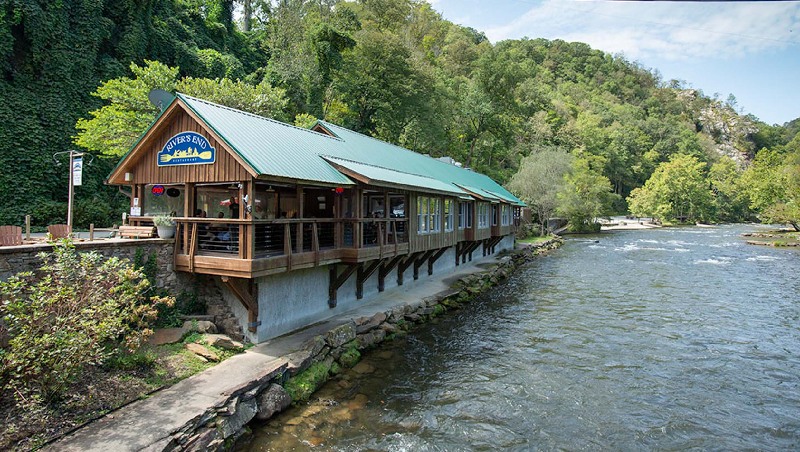

The snake river is a beautiful river that flows through several states. Those states are Wyoming, Idaho, Oregon, and Washignton. This image alone is just one of the many great views you can see while traveling down the snake river. The Snake river is so big that there are many places along the river that host white water rafting expeditions.

Along the Snake river there are plenty of places to stop and grab a bite to eat. The snake river is so vast that there are plenty of spot to stop and relax before continuing your expedition.